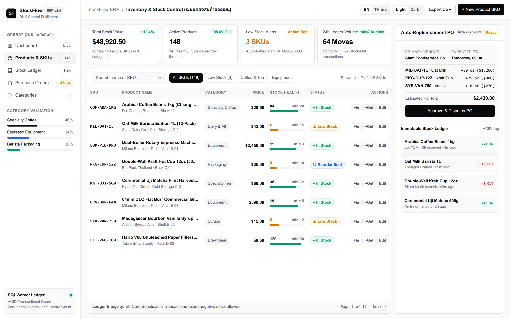
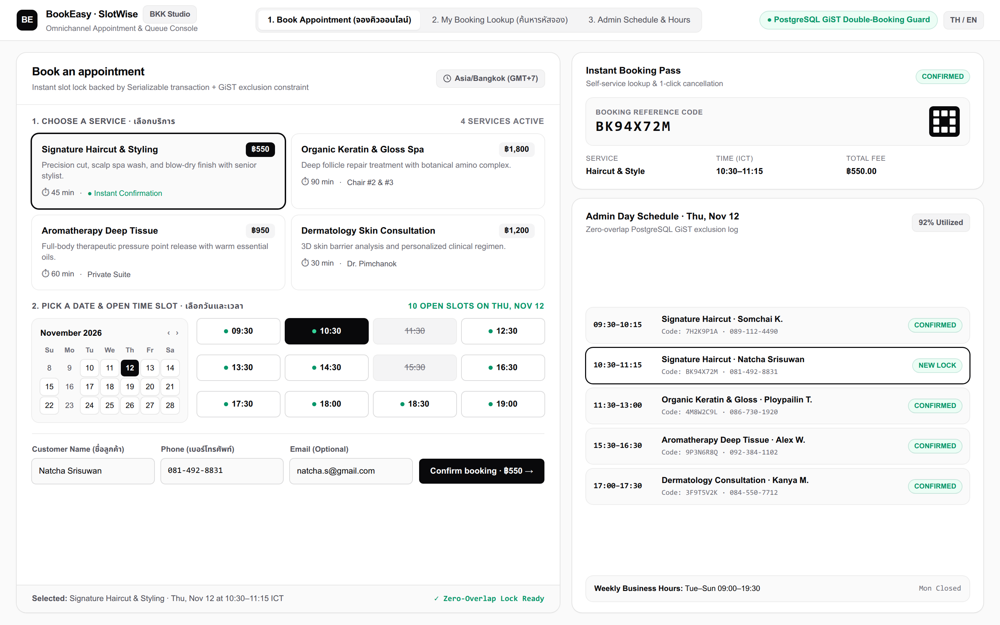
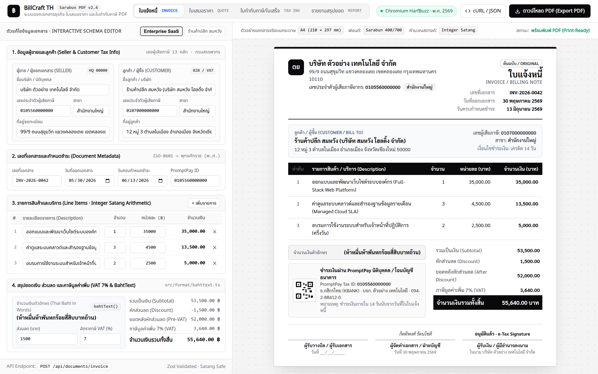
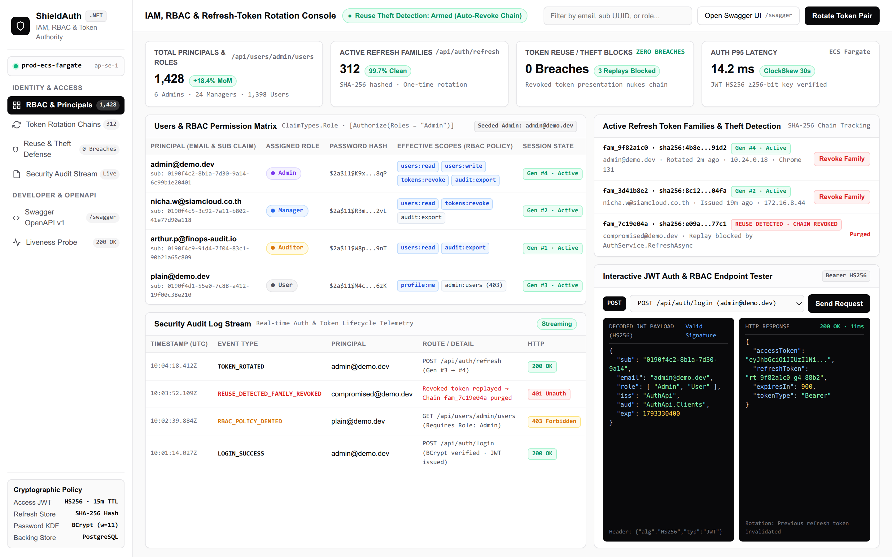
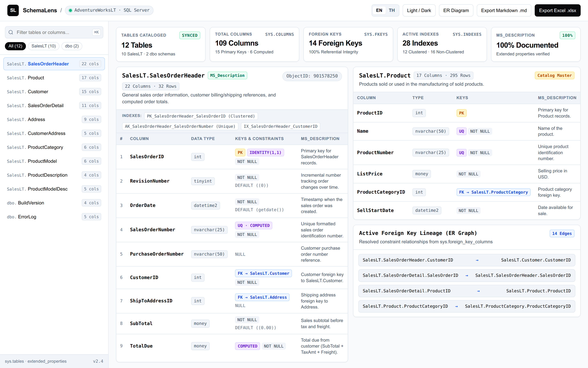
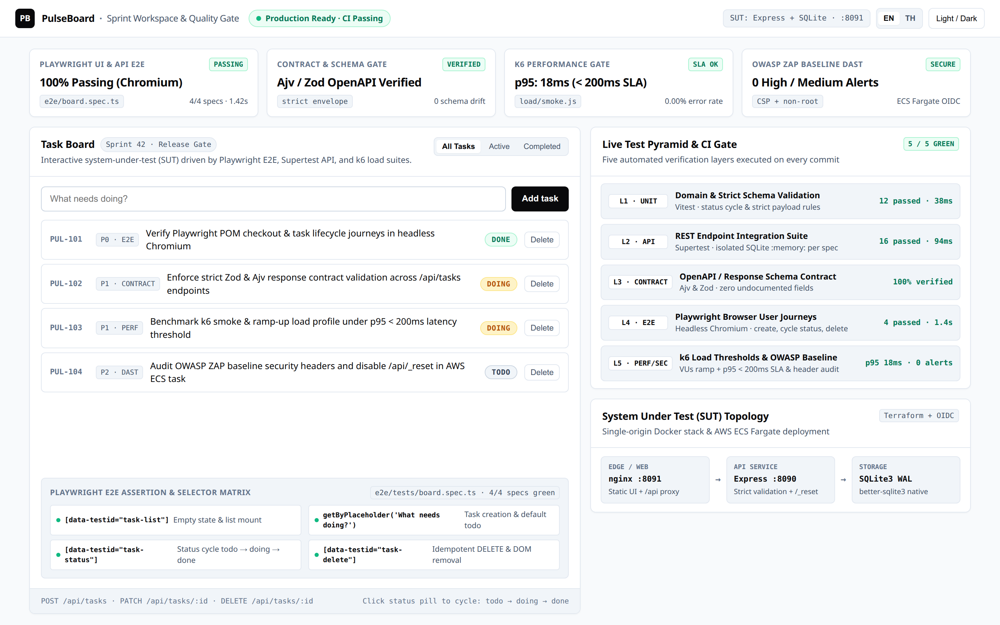

Turnkey business software & enterprise engineering.
Peem Phetpimol — Fullstack & Cloud Engineer (.NET · Node.js · React · Azure · AWS · Playwright)
Deploy commercial-ready web systems (Inventory ERP, Booking Engine, Thai Invoice Studio, RBAC Security Console) customized for your business — or commission custom fullstack software backed by automated E2E tests and a single “docker compose up”.
Ready-to-Deploy Systems & Engineering Showcases
Every system below features a Minimal + Modern UI, bilingual TH/EN workflow, automated test suite, and one-command Docker & Cloud setup. Available for turnkey customization or as the foundation for your custom build.

StockFlow / inventory-manager
Multi-warehouse inventory & stock ledger ERP — SKU catalog, stock-in/out audit trail, low-stock alerts, CSV export, bilingual TH/EN & dark mode.

SlotWise / appointment-booking
Zero double-booking appointment & clinic/service scheduler — 2-layer conflict protection (DB unique index + transaction lock), specialist filter & instant booking drawer.

BillCraft TH / thai-document-generator
Interactive Thai Quotation, Tax Invoice & Receipt Web Studio + REST API — live split-pane A4 paper preview, automatic 7% VAT & Thai BahtText, PromptPay QR, and pixel-perfect Sarabun PDF export.

ShieldAuth / auth-api
Enterprise JWT authentication & RBAC management console — interactive token rotation sandbox, role permission matrix, security audit stream & OpenAPI/Swagger.

SchemaLens / sqlserver-data-dictionary
Interactive SQL Server schema explorer & automated Excel/HTML data dictionary generator — instant column/type search, PK/FK badges & audit-ready documentation.

PulseBoard / test-automation-showcase
Sprint task workspace paired with a live 5-layer automated release quality gate — Unit, REST API, OpenAPI Contract, Playwright E2E, and k6 load testing.
How we can work together
Whether you want a ready-made system adapted to your brand in days, or a custom enterprise platform engineered from scratch.
Turnkey System Customization
Take any of the 6 commercial systems above (StockFlow, SlotWise, BillCraft TH, ShieldAuth, SchemaLens) and customize branding, workflows, and cloud hosting for your business with 100% source code ownership.
Custom Fullstack Web Platforms
End-to-end business web applications, internal ERP/backoffice portals, and customer-facing SaaS built with .NET, Node.js, React, TypeScript, SQL Server, or PostgreSQL.
Thai E-Tax, PDF & Excel Automation
Pixel-perfect Thai quotations, tax invoices, receipts, and executive Excel reports with accurate vowel/tone rendering, BahtText, and 7% VAT calculations.
Secure APIs, RBAC & Integrations
High-reliability REST APIs with JWT refresh-token rotation, role-based access control (RBAC), LINE OA / payment gateway webhooks, and OpenAPI documentation.
Playwright E2E & Load Testing (SDET)
Automated Unit, API, Contract, Playwright browser E2E, and k6 performance tests wired into GitHub Actions so every release ships without regressions.
Cloud Deployment & Docker IaC
Production deployment to Azure or AWS using Docker, Terraform/Bicep infrastructure-as-code, managed databases, and secretless OIDC CI/CD pipelines.
Modern, evergreen engineering stack
Proven technologies widely adopted by SMEs and enterprise teams — easy for your internal developers to maintain and scale.
- .NET (C# / ASP.NET Core)
- Node.js
- React
- TypeScript
- SQL Server
- PostgreSQL
- Docker Compose
- Playwright E2E
- k6 Load Testing
- OpenAPI / Swagger
- Terraform & Bicep
- GitHub Actions (OIDC)
- Microsoft Azure
- Amazon Web Services (AWS)
How every project is delivered
Clear written communication, predictable milestones, and production-ready handovers.
Scope & written architecture
We align on business workflows, UI screens, data models, API contracts, and milestone deliverables in writing before implementation begins.
Runnable with one command
Every milestone runs locally or on staging via a single docker compose up with realistic sample data — so you can test real screens at every step.
Automated test pyramid in CI
Unit, integration, contract, and Playwright E2E tests run automatically on every change so regressions are caught before deployment.
100% source code & Cloud handover
Full source code ownership, Terraform/Bicep infrastructure modules, secretless OIDC CI/CD pipelines, and a clear Thai/English operations runbook.
About Peem Phetpimol
Fullstack & cloud engineer with 4+ years building, testing, and deploying mission-critical software for large enterprises in the energy and telecom sectors — across backend (.NET / Node.js), frontend (React / TypeScript), system analysis, and test automation (SDET), shipping to Azure and AWS.
I combine clean, modern product design with enterprise engineering discipline: every system I deliver looks crisp and intuitive for end users while remaining rock-solid, tested, and easy to operate for engineering teams.
License a system or start a custom project
Reach out via LINE OA, Fastwork, or Email — I reply within a few hours.
Quick project or system brief (optional)
- Which turnkey system you want customized (StockFlow, SlotWise, BillCraft TH, ShieldAuth, SchemaLens, PulseBoard) — or the custom workflow you want built.
- Target launch timeline and any integrations needed (LINE OA, PromptPay, ERP, SSO).
- Preferred hosting environment (Azure, AWS, VPS, or on-premise Docker).
Available for turnkey system deployments and custom freelance/contract engagements (GMT+7).